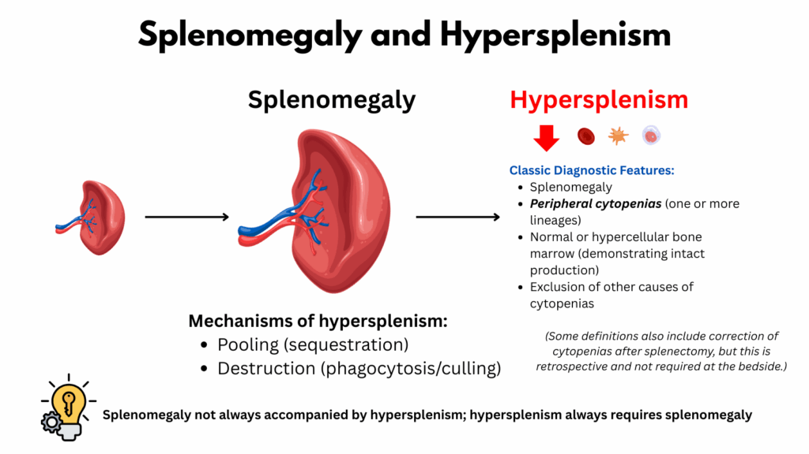
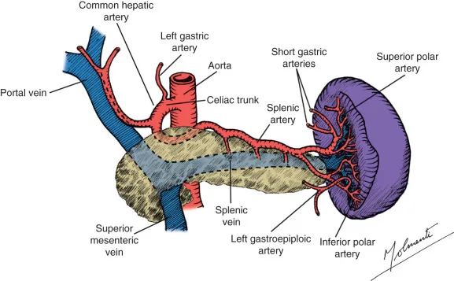
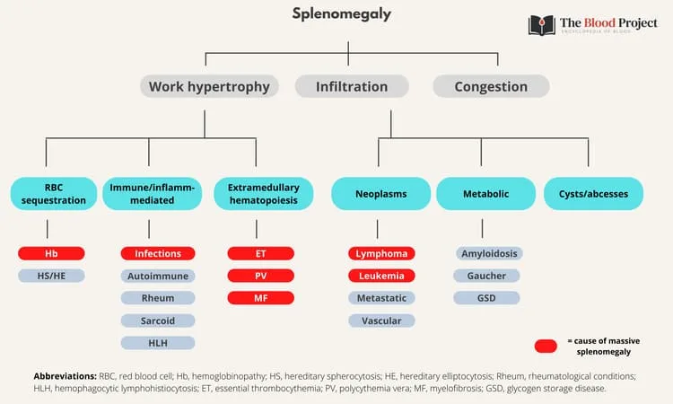
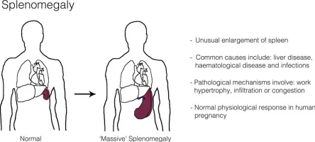
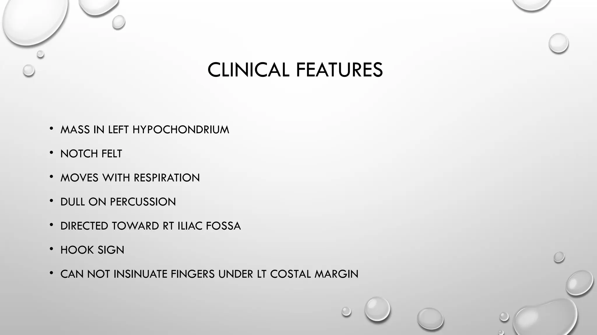
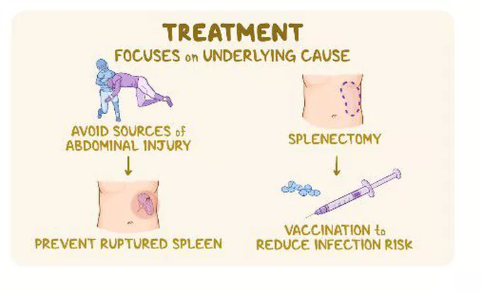

Expanded Nursing Uganda Explanation
Splenomegaly and Hypersplenism should be understood beyond a short definition. Link the concept to patient history, focused assessment, common risks, nursing priorities, documentation and evaluation of outcomes.
01 Overview
Splenomegaly is an abnormal enlargement of the spleen.
- Etymology: The term comes from the Greek words "splen" (spleen) and "megas" (large).
- Clinical Significance: A normal adult spleen is typically not palpable below the left costal margin (rib cage). Clinical splenomegaly is usually diagnosed when the spleen becomes palpable on physical examination. On imaging (e.g., ultrasound, CT scan), splenomegaly is generally defined by a spleen length greater than 12-13 cm in adults (though exact cut-offs can vary slightly by age, gender, and body habitus).
- Significance: Splenomegaly is almost always a sign of an underlying disease rather than a disease in itself. It indicates that the spleen is actively involved in a pathological process.
Hypersplenism is a syndrome characterized by:
- Splenomegaly: An enlarged spleen (though in rare cases, hypersplenism can occur with a spleen of normal size or only mildly enlarged).
- Cytopenias: A reduction in one or more peripheral blood cell lines (red blood cells, white blood cells, and/or platelets). This can manifest as: Anemia: Decreased red blood cell count.
- Leukopenia: Decreased white blood cell count (particularly neutrophils).
- Thrombocytopenia: Decreased platelet count.
- Pancytopenia: A decrease in all three cell lines.
- Compensatory Bone Marrow Hyperplasia: The bone marrow attempts to compensate for the peripheral cytopenias by increasing production of the affected blood cell types.
- Correction of Cytopenias by Splenectomy: The cytopenias improve or resolve after removal of the spleen (splenectomy).
- Mechanism: Hypersplenism occurs because the enlarged spleen becomes hyperactive in its normal functions. It traps and destroys blood cells and platelets at an accelerated rate, leading to their reduction in the circulation. The pooling of blood in the enlarged spleen also contributes to the cytopenias.
- Relationship to Splenomegaly: Hypersplenism almost always occurs in the context of splenomegaly. While all hypersplenism involves splenomegaly, not all splenomegaly leads to hypersplenism. A person can have an enlarged spleen without evidence of increased destruction of blood cells (i.e., without cytopenias). Therefore, splenomegaly is a finding , and hypersplenism is a syndrome that often accompanies splenomegaly, involving both enlargement and increased splenic activity leading to blood cell destruction.
- Location: The spleen is located in the left upper quadrant (LUQ) of the abdomen.
- It sits just beneath the diaphragm, posterior to the stomach, and superior to the left kidney and splenic flexure of the colon.
- It is generally protected by the 9th, 10th, and 11th ribs.
- It is an intraperitoneal organ , suspended by various ligaments (gastrosplenic, splenorenal, phrenicocolic).
- Size and Weight: In a healthy adult, the spleen is typically about 10-12 cm in length, 7 cm in width, and 3-4 cm in thickness.
- It weighs approximately 150-200 grams.
- It is usually ovoid or bean-shaped.
- Crucially, a normal spleen is generally not palpable below the left costal margin in adults. Palpability usually indicates enlargement.
- Blood Supply: The spleen is highly vascular. Its primary blood supply is from the splenic artery (a branch of the celiac trunk).
- Venous drainage is via the splenic vein , which joins the superior mesenteric vein to form the hepatic portal vein. This rich blood flow is essential for its filtering functions.
- Internal Structure: The spleen is encased in a fibrous capsule.
- Its internal substance, the splenic pulp , is divided into two main components: Red Pulp (approx. 75-80%): Rich in red blood cells, macrophages, and reticular cells. This is where old and damaged red blood cells are filtered and destroyed. It consists of splenic cords (cords of Billroth) and splenic sinusoids.
- White Pulp (approx. 20-25%): Composed primarily of lymphatic tissue, similar to lymph nodes. It contains B lymphocytes, T lymphocytes, and macrophages, organized around central arterioles. This is the immune surveillance part of the spleen.
The spleen is a vital organ, often called the "lymph node of the blood" due to its immune functions, but it also has crucial roles in hematology.
- Hematological Functions: Filtration and Culling (Quality Control): The red pulp removes old, damaged, rigid, or abnormal red blood cells (erythrocytes). As red blood cells pass through the narrow splenic sinusoids, healthy, flexible cells can squeeze through, while old, rigid cells are trapped and phagocytosed by macrophages. This process is called "culling."
- Pitting: The spleen can also remove (pit) inclusions or parasites from red blood cells (e.g., Howell-Jolly bodies, malarial parasites) without destroying the entire cell.
- Sequestration/Storage: The spleen acts as a reservoir for certain blood cells, particularly platelets (about one-third of the body's platelets are stored in the spleen) and, to a lesser extent, red blood cells. In conditions like splenomegaly, this storage function can become exaggerated, leading to lower counts in the peripheral circulation.
- Erythropoiesis (Fetal Life): In fetal life, the spleen is a site of red blood cell production (extramedullary hematopoiesis). This capacity can be reactivated in adults under certain pathological conditions (e.g., severe bone marrow failure).
- Immunological Functions: Immune Surveillance: The white pulp acts as a major secondary lymphoid organ. It filters blood-borne antigens, allowing lymphocytes and macrophages to initiate immune responses.
- Antibody Production: B cells in the white pulp are activated to produce antibodies, especially against encapsulated bacteria (e.g., Streptococcus pneumoniae, Haemophilus influenzae type b, Neisseria meningitidis ).
- Phagocytosis: Splenic macrophages efficiently phagocytose bacteria, viruses, and other particulate matter from the blood.
- Opsonization: The spleen plays a role in producing opsonins that enhance phagocytosis.
The causes of splenomegaly are diverse and can be broadly categorized based on the underlying pathological process affecting the spleen.
The spleen often enlarges as it works to filter pathogens and mount an immune response.
- Bacterial Infections: Bacterial Endocarditis: Infection of the heart valves, leading to bacteremia and splenic involvement.
- Salmonellosis (Typhoid Fever): Systemic bacterial infection.
- Brucellosis: Zoonotic infection.
- Tuberculosis: Can cause splenic involvement, especially disseminated TB.
- Abscess: Localized collection of pus within the spleen.
- Viral Infections: Infectious Mononucleosis (Epstein-Barr Virus - EBV): Very common cause, with lymphoid hyperplasia in the white pulp.
- Cytomegalovirus (CMV): Another common viral cause.
- HIV Infection: Especially in early stages or with opportunistic infections.
- Hepatitis (A, B, C): Can cause mild splenomegaly.
- Parasitic Infections: Malaria: Chronic infection causes massive splenomegaly (hyperreactive malarial splenomegaly).
- Leishmaniasis (Kala-azar): Affects reticuloendothelial system.
- Schistosomiasis: Liver fibrosis and portal hypertension lead to congestive splenomegaly.
- Toxoplasmosis: Parasitic infection.
- Fungal Infections: Histoplasmosis, Coccidioidomycosis: Systemic fungal infections.
These conditions often involve increased destruction or production of blood cells, leading to splenic overactivity or infiltration.
- Hemolytic Anemias: The spleen works harder to remove damaged or abnormal red blood cells.
- Hereditary: Hereditary spherocytosis, hereditary elliptocytosis, thalassemia, sickle cell disease (though often leads to autosplenectomy in adults, can have acute sequestration crises in children).
- Acquired: Autoimmune hemolytic anemia (AIHA).
- Myeloproliferative Neoplasms (MPNs): Disorders of abnormal blood cell production in the bone marrow, often leading to extramedullary hematopoiesis (blood cell production outside the bone marrow, including the spleen).
- Chronic Myeloid Leukemia (CML): Often causes massive splenomegaly.
- Primary Myelofibrosis: Bone marrow scarring leads to extensive extramedullary hematopoiesis.
- Polycythemia Vera: Overproduction of red blood cells.
- Essential Thrombocythemia: Overproduction of platelets (less common cause of significant splenomegaly).
- Lymphoproliferative Disorders: Cancers originating from lymphocytes.
- Leukemias: Chronic Lymphocytic Leukemia (CLL), Hairy Cell Leukemia.
- Lymphomas: Hodgkin lymphoma, Non-Hodgkin lymphoma (especially splenic marginal zone lymphoma, follicular lymphoma).
- Histiocytic Disorders: Diseases involving abnormal proliferation of histiocytes (macrophages).
- Gaucher Disease: Lysosomal storage disorder, leading to accumulation of glucocerebroside in macrophages.
Conditions that impede blood flow through the portal venous system, leading to blood backing up into the spleen.
- Portal Hypertension: Liver Cirrhosis (most common): Increased resistance to blood flow in the liver.
- Portal Vein Thrombosis: Clot in the portal vein.
- Splenic Vein Thrombosis: Clot specifically in the splenic vein (can be localized, e.g., due to pancreatitis).
- Budd-Chiari Syndrome: Obstruction of hepatic veins.
- Congestive Heart Failure: Severe, chronic right-sided heart failure can cause passive congestion.
Conditions where abnormal substances or cells accumulate in the spleen.
- Storage Diseases: Gaucher Disease: (mentioned under hematologic, but fits here too): Accumulation of lipids.
- Niemann-Pick Disease: Another lysosomal storage disorder.
- Amyloidosis: Deposition of abnormal protein (amyloid) in tissues.
- Metabolic Disorders: Sarcoidosis: Granulomatous inflammatory disease.
The spleen can enlarge as part of a systemic inflammatory or autoimmune response.
- Systemic Lupus Erythematosus (SLE): Autoimmune disease affecting multiple organs.
- Rheumatoid Arthritis: Especially Felty's syndrome (splenomegaly, rheumatoid arthritis, neutropenia).
- Sarcoidosis: Granulomatous disease.
- Cysts: Benign (e.g., congenital, post-traumatic, hydatid) or malignant (rare).
- Benign Tumors: Hemangiomas.
- Malignant Tumors: Primary splenic lymphoma (rare), metastatic cancer (very rare as the spleen usually does not get metastases).
Hypersplenism is fundamentally about an overactive spleen, leading to the premature destruction of healthy blood cells. This process involves a combination of splenic enlargement, exaggerated filtration, and sometimes increased immune activity.
The primary pathophysiology revolves around three main processes occurring within the enlarged spleen:
- Exaggerated Sequestration (Pooling/Trapping): Normal Spleen: A healthy spleen normally sequesters about one-third of the body's platelets and a small percentage of red blood cells. These cells are temporarily stored and can be released when needed.
- Splenomegaly and Hypersplenism: When the spleen is enlarged, its volume increases significantly. This leads to an exaggerated pooling of blood within the splenic red pulp, sinusoids, and venous system.
- Effect on Cytopenias: A much larger proportion of the body's circulating blood cells (RBCs, WBCs, and especially platelets) can become temporarily trapped or sequestered within the enlarged spleen. This reduces their numbers in the peripheral circulation, contributing to cytopenias (anemia, leukopenia, thrombocytopenia). The cells themselves might not be destroyed, but they are unavailable for function in the rest of the body.
- Increased Culling and Phagocytosis (Destruction): Normal Spleen: The spleen's normal function is to filter and remove old, damaged, or abnormal blood cells (culling) and cellular debris, primarily by macrophages in the red pulp.
- Splenomegaly and Hypersplenism: In an enlarged and hyperactive spleen, the blood cells spend a longer time navigating the tortuous splenic cords and sinusoids. This prolonged exposure, combined with an increased number and activity of macrophages, leads to an accelerated and premature destruction of even otherwise healthy or minimally abnormal blood cells.
- Effect on Cytopenias: Macrophages in the spleen engulf and destroy red blood cells, white blood cells, and platelets at an increased rate, directly causing their reduction in the peripheral blood. This destruction is a major contributor to the cytopenias.
- Increased Immune-Mediated Destruction (less common, but can contribute): In some conditions leading to splenomegaly (e.g., autoimmune diseases), the spleen's immune functions might be overactive.
- This can lead to an increased production of antibodies against blood cells (e.g., autoantibodies in autoimmune hemolytic anemia or immune thrombocytopenic purpura), which then opsonize these cells, marking them for premature destruction by splenic macrophages.
- While not the primary mechanism for all hypersplenism, it can exacerbate the process when underlying immune disorders are present.
This leads to a feedback loop:
- Underlying Disease: Causes splenomegaly (e.g., portal hypertension, myelofibrosis, chronic infection).
- Enlarged Spleen: Leads to increased sequestration and accelerated destruction of peripheral blood cells (RBCs, WBCs, platelets).
- Peripheral Cytopenias: Detected as anemia, leukopenia, and/or thrombocytopenia in the blood tests.
- Compensatory Bone Marrow Hyperplasia: The body attempts to counteract the peripheral cytopenias by stimulating the bone marrow to produce more blood cells. This is a key diagnostic feature of hypersplenism – a bone marrow that is working overtime, but the peripheral counts remain low due to splenic destruction.
- Perpetuation: The enlarged, overactive spleen continues to remove these newly produced cells, perpetuating the cycle of cytopenias.
The resulting low blood cell counts lead to the clinical manifestations of hypersplenism:
- Anemia: Fatigue, weakness, pallor, shortness of breath.
- Leukopenia (specifically neutropenia): Increased susceptibility to infections.
- Thrombocytopenia: Increased risk of bleeding (petechiae, purpura, easy bruising, mucosal bleeding).
- Splenomegaly: The pathophysiology here is primarily focused on why the spleen is enlarged. Is it due to: Congestion (blood backing up)?
- Increased work (filtering damaged cells in hemolytic anemia)?
- Infiltration (cancer cells, storage material)?
- Increased immune activity (infection, autoimmune disease)?
- Hypersplenism: The pathophysiology is specifically focused on how that enlarged spleen then causes the premature destruction and/or sequestration of otherwise healthy or semi-healthy blood cells, leading to peripheral cytopenias despite an active bone marrow.
The clinical manifestations of splenomegaly and hypersplenism can range from asymptomatic to severe and life-threatening, depending on the degree of enlargement, the severity of cytopenias, and the nature of the underlying disease.
These symptoms arise directly from the physical presence of an enlarged spleen.
- Abdominal Discomfort/Pain: Left Upper Quadrant (LUQ) Discomfort/Heaviness: This is the most common complaint, often described as a dull ache or fullness. It's due to the stretching of the splenic capsule and pressure on surrounding organs.
- Early Satiety: The enlarged spleen can press on the stomach, leading to a feeling of fullness after eating only a small amount. This can contribute to weight loss.
- Referred Pain: Pain may be referred to the left shoulder (due to diaphragmatic irritation, particularly if the spleen is very large).
- Palpable Mass: On physical examination, the spleen can be felt below the left costal margin, sometimes extending significantly into the abdomen or even across the midline. This is the hallmark clinical sign.
- Hiccups: Less common, but can occur if the enlarged spleen irritates the diaphragm.
These symptoms arise from the reduction in peripheral blood cell counts.
- Anemia (Due to Decreased Red Blood Cells): Fatigue and Weakness: The most common symptom, due to reduced oxygen-carrying capacity.
- Pallor: Pale skin, nail beds, and mucous membranes.
- Dyspnea (Shortness of Breath): Especially on exertion.
- Tachycardia (Rapid Heart Rate): The heart compensates by pumping faster to deliver oxygen.
- Dizziness or Lightheadedness: Due to reduced oxygen supply to the brain.
- Leukopenia (Specifically Neutropenia, Due to Decreased White Blood Cells): Increased Susceptibility to Infections: Patients may present with recurrent or unusually severe bacterial, fungal, or viral infections (e.g., pneumonia, cellulitis, oral thrush, urinary tract infections).
- Fever: Often a sign of infection.
- Thrombocytopenia (Due to Decreased Platelets): Bleeding Tendencies: Petechiae: Pinpoint, non-blanching red or purple spots on the skin (often on lower extremities), indicating capillary bleeding.
- Purpura: Larger patches of bleeding under the skin.
- Ecchymoses (Bruising): Easy bruising with minimal trauma.
- Mucosal Bleeding: Epistaxis (nosebleeds), gingival bleeding (gum bleeding), menorrhagia (heavy menstrual bleeding).
- Gastrointestinal Bleeding: Blood in stool (melena or hematochezia) or vomit (hematemesis).
- Hematuria: Blood in urine.
- Prolonged Bleeding: After minor cuts or dental procedures.
- History Taking: Symptoms of Splenomegaly: Ask about left upper quadrant discomfort, pain, early satiety, feelings of fullness, referred shoulder pain.
- Symptoms of Cytopenias: Inquire about fatigue, weakness, pallor (anemia); recurrent infections, fever (leukopenia/neutropenia); easy bruising, petechiae, nosebleeds, heavy periods, GI bleeding (thrombocytopenia).
- Symptoms of Underlying Disease: Explore fever, night sweats, weight loss (malignancy, chronic infection); jaundice, ascites, history of hepatitis (liver disease); joint pain, rashes (autoimmune disease); travel history, exposure (infectious diseases); family history (hereditary conditions).
- Medication History: Some drugs can cause cytopenias or affect spleen size.
- Physical Examination: Abdominal Palpation: Palpation Technique: Patient should be supine, breathe deeply. Examiner starts palpating low in the left abdomen and moves upwards towards the costal margin.
- Significance: A palpable spleen below the left costal margin in an adult generally indicates splenomegaly (a normal spleen is usually not palpable). The degree of enlargement can be estimated by how far below the costal margin it extends.
- Characteristics: Assess for tenderness, consistency (firm vs. soft), and surface regularity.
- Other Findings: Lymphadenopathy: Enlarged lymph nodes can suggest infection, lymphoma, or leukemia.
- Hepatomegaly: Enlarged liver, often accompanies splenomegaly (hepatosplenomegaly), particularly in liver disease or systemic conditions.
- Signs of Anemia: Pallor of conjunctivae, nail beds.
- Signs of Bleeding: Petechiae, purpura, ecchymoses.
- Signs of Underlying Disease: Jaundice, ascites, spider angiomas (liver disease); rashes, joint swelling (autoimmune).
- Complete Blood Count (CBC) with Differential: Splenomegaly: May be normal or show varying degrees of cytopenias.
- Hypersplenism: Characteristically shows: Anemia: Decreased hemoglobin and hematocrit.
- Leukopenia: Decreased total white blood cell count, often with neutropenia (decreased neutrophils).
- Thrombocytopenia: Decreased platelet count.
- Peripheral Blood Smear: Important for evaluating morphology of blood cells (e.g., spherocytes in hereditary spherocytosis, schistocytes in microangiopathic hemolytic anemia, teardrop cells in myelofibrosis) and for identifying abnormal cells (e.g., immature myeloid cells in CML, hairy cells in hairy cell leukemia).
- Reticulocyte Count: Elevated in hemolytic anemias (bone marrow compensation for RBC destruction).
- Can be high or normal in hypersplenism despite anemia (reflecting bone marrow's attempt to compensate).
- Liver Function Tests (LFTs): To assess for underlying liver disease (e.g., cirrhosis causing portal hypertension). Elevated ALT, AST, bilirubin, alkaline phosphatase.
- Coagulation Studies (PT, aPTT, INR): To assess clotting function, especially if there's thrombocytopenia or liver disease.
- Viral Serology: Tests for EBV, CMV, HIV, hepatitis viruses (A, B, C) if infection is suspected.
- Autoimmune Markers: ANA (antinuclear antibodies), RF (rheumatoid factor) if autoimmune disease is suspected.
- Bone Marrow Aspiration and Biopsy: Purpose: To assess bone marrow cellularity and maturation.
- Findings in Hypersplenism: Typically shows hypercellularity for the affected cell lines (e.g., erythroid hyperplasia in anemia, megakaryocytic hyperplasia in thrombocytopenia), indicating the bone marrow is actively trying to produce cells, but they are being destroyed in the spleen.
- Also identifies primary bone marrow disorders (e.g., leukemia, lymphoma, myelofibrosis, storage disorders).
- Specific Tests for Underlying Conditions: Gaucher cell stain if Gaucher disease suspected.
- Hemoglobin electrophoresis for thalassemia, sickle cell disease.
- Flow cytometry for lymphoid malignancies.
- Ultrasonography (Ultrasound): First-line imaging: Non-invasive, widely available.
- Confirms Splenomegaly: Measures splenic dimensions (length >12-13 cm usually indicates enlargement).
- Evaluates Spleen Structure: Can detect cysts, infarcts, tumors, or abscesses.
- Assesses Liver and Portal System: Crucial for identifying liver disease, portal hypertension (e.g., dilated portal vein, ascites), and portal/splenic vein thrombosis.
- Computed Tomography (CT) Scan (with contrast): Provides more detailed anatomical information: More precise measurement of spleen size and morphology.
- Better for characterizing lesions: Cysts, tumors, infarcts, abscesses.
- Excellent for evaluating surrounding organs: Liver, lymph nodes, pancreas, and vasculature.
- Detects Portosystemic Collaterals: In portal hypertension.
- Magnetic Resonance Imaging (MRI): High soft-tissue resolution: Useful for specific characterization of splenic lesions and often for evaluating vascular anatomy, especially in complex cases.
- Echocardiography: If endocarditis or heart failure is suspected.
The management of splenomegaly and hypersplenism is primarily directed at the underlying cause .
This is the most crucial aspect of management. If the underlying condition can be treated, the splenomegaly and hypersplenism will often resolve or improve.
- Infections: Bacterial: Antibiotics (e.g., for endocarditis, brucellosis).
- Viral: Antivirals (e.g., for HIV, chronic hepatitis B/C), or supportive care (e.g., for mononucleosis).
- Parasitic: Antiparasitic drugs (e.g., antimalarials, antileishmanials).
- Hematologic Disorders: Myeloproliferative Neoplasms (MPNs): Chemotherapy (e.g., hydroxyurea for CML, polycythemia vera), JAK inhibitors (e.g., ruxolitinib for myelofibrosis).
- Leukemias/Lymphomas: Chemotherapy, radiation therapy, immunotherapy, stem cell transplantation.
- Hemolytic Anemias: Corticosteroids (for autoimmune hemolytic anemia), immunoglobulins (IVIG), blood transfusions, disease-specific treatments (e.g., gene therapy for thalassemia, though not common for splenomegaly management).
- Liver Disease/Portal Hypertension: Treat the cause of liver disease: Antivirals for hepatitis, abstinence from alcohol, weight loss for NAFLD.
- Manage portal hypertension: Beta-blockers to reduce portal pressure, diuretics for ascites, endoscopic variceal ligation for varices. Transjugular intrahepatic portosystemic shunt (TIPS) can decompress the portal system.
- Autoimmune Diseases: Immunosuppressants, corticosteroids (e.g., for SLE, rheumatoid arthritis).
- Storage Diseases: Enzyme replacement therapy (e.g., for Gaucher disease).
While the underlying cause is being addressed, supportive measures are often necessary to manage the symptoms of hypersplenism.
- Blood Transfusions: Red Blood Cell Transfusions: For severe symptomatic anemia.
- Platelet Transfusions: For severe thrombocytopenia, especially with active bleeding or prior to invasive procedures.
- Growth Factors: Granulocyte Colony-Stimulating Factor (G-CSF): Can be used to increase neutrophil counts in severe leukopenia/neutropenia, reducing infection risk.
- Infection Prophylaxis: Antibiotics may be used prophylactically in severely neutropenic patients.
These interventions are considered when the hypersplenism is severe, unresponsive to primary therapy, or life-threatening.
- Splenectomy (Surgical Removal of the Spleen): Indications: Severe Symptomatic Cytopenias: When severe anemia, neutropenia, or thrombocytopenia significantly impact quality of life or pose a life-threatening risk (e.g., severe bleeding, recurrent severe infections) and are not responsive to other treatments.
- Massive, Symptomatic Splenomegaly: When the enlarged spleen causes severe pain, early satiety leading to malnutrition, or risk of splenic rupture.
- Diagnostic: Rarely, for definitive diagnosis of certain splenic pathologies (e.g., lymphoma, specific storage disorders) when less invasive methods are inconclusive.
- Certain Hematologic Conditions: Often curative for hereditary spherocytosis, effective for immune thrombocytopenia (ITP) and autoimmune hemolytic anemia (AIHA) refractory to medical therapy, and sometimes beneficial in myelofibrosis.
- Risks & Complications: (Will be detailed in Objective 8)
- Pre-splenectomy Immunizations: Crucial due to increased risk of infection post-splenectomy (especially encapsulated bacteria). Vaccinations against Streptococcus pneumoniae, Haemophilus influenzae type b , and Neisseria meningitidis are mandatory.
- Partial Splenectomy (Splenic Embolization): Indications: May be considered in selected cases of massive splenomegaly, especially when full splenectomy is contraindicated or carries very high risk. It aims to reduce spleen size and function while preserving some splenic tissue.
- Procedure: Involves selectively occluding splenic arteries, causing infarction of part of the spleen.
- Drawbacks: Risk of abscess formation, pain, recurrence of splenomegaly.
- Radiation Therapy: Indications: Rarely used, but may be considered for palliation of severe pain from massive splenomegaly in patients who are not candidates for splenectomy (e.g., in advanced myelofibrosis or lymphoma). It aims to shrink the spleen and reduce pain.
- Drawbacks: Can cause bone marrow suppression.
Nursing care for patients with splenomegaly and hypersplenism focuses on managing symptoms, preventing complications, educating the patient, and supporting them through their treatment journey.
Related to abdominal pressure from enlarged spleen, evidenced by patient report of left upper quadrant discomfort/pain, early satiety, and observed guarding.
- Interventions: Assessment: Routinely assess pain/discomfort level using a pain scale (0-10). Note location, quality, and aggravating/alleviating factors.
- Positioning: Assist patient to positions of comfort; semi-Fowler's position may reduce diaphragmatic pressure.
- Dietary Modifications: Offer small, frequent meals rather than large ones to reduce gastric distension and minimize early satiety. Suggest easily digestible foods.
- Pharmacology: Administer prescribed analgesics as ordered. Evaluate effectiveness.
- Non-pharmacological: Apply warm or cool compresses (if tolerated and not contraindicated), encourage relaxation techniques (deep breathing, guided imagery).
Related to early satiety and abdominal discomfort secondary to splenomegaly, evidenced by reported feeling of fullness after small meals, weight loss, and/or inadequate caloric intake.
- Interventions: Assessment: Monitor weight daily/weekly. Assess dietary intake and food preferences. Monitor lab values (albumin, prealbumin) for nutritional status.
- Dietary Counseling: Collaborate with a dietitian to develop an individualized meal plan.
- Meal Management: Provide small, frequent, nutrient-dense meals and snacks. Avoid gas-producing foods.
- Timing: Offer food when patient is most comfortable and hungry.
- Hydration: Encourage adequate fluid intake between meals rather than with meals to prevent early satiety.
Related to enlarged, fragile spleen.
- Interventions: Patient Education: Educate patient and family about avoiding contact sports, strenuous activities, heavy lifting, and any activities that could cause abdominal trauma.
- Protection: Advise patient to wear loose clothing and avoid tight waistbands.
- Monitoring: Instruct patient to report any sudden, severe left upper quadrant pain or signs of hypovolemic shock immediately.
- Gentle Care: Perform abdominal assessments gently.
Related to anemia, evidenced by reported fatigue, weakness, dyspnea on exertion, and increased heart rate with activity.
- Interventions: Assessment: Monitor hemoglobin, hematocrit, vital signs before and after activity. Assess patient's perceived exertion level.
02 Nursing Uganda Clinical Lens
Use Splenomegaly and Hypersplenism as a practical nursing topic, not only a memorized definition. Start with normal structure and function, then connect it to assessment findings and disease.
- What to understand first: define splenomegaly and hypersplenism, identify the normal or expected pattern, then explain what changes when the patient is unwell.
- Why it matters in care: the nurse must recognize risk early, explain findings clearly, document accurately and know when to escalate.
- How to revise it: connect each point to assessment, nursing diagnosis or care problem, intervention, rationale and evaluation.
03 Assessment Guide
- Relevant inspection, palpation, movement, auscultation, vital signs or neurological checks.
- Normal findings, abnormal findings and what each abnormality may indicate.
- Patient history, risk factors and how the body system affects other systems.
04 Nursing Priorities, Rationales and Outcomes
- Use anatomy to explain symptoms and guide focused assessment.
- Recognize findings that need urgent escalation.
- Teach the patient using simple body-system language.
The rationale for these priorities is patient safety: nursing actions should prevent deterioration, reduce discomfort, support recovery and create clear evidence for the next caregiver.
- Expected outcome: The learner can explain normal function, identify abnormal signs and connect them to nursing action.
05 Patient Teaching and Revision Check
- Explain splenomegaly and hypersplenism in simple language the patient or caregiver can repeat back.
- Teach warning signs, medicine or follow-up instructions, hygiene or lifestyle points where relevant.
- For exams, prepare a short answer using: definition, causes or risk factors, signs, assessment, management, complications and prevention.
- For ward practice, document baseline findings, actions taken, patient response and the plan for review.
Illustrations and Diagrams (6)






Related Video Lectures
Watch nursing lecture videos on YouTube for this topic. Opens in a new tab.
Watch on YouTubeExternal link: YouTube may use its own cookies and terms. Nursing Uganda is not affiliated with YouTube.